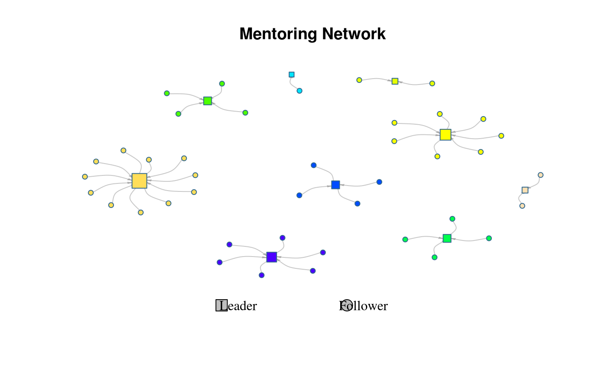

Implementes the algorithm described in Valente and Davis (1999)
mentor_matching( graph, n, cmode = "indegree", lead.ties.method = "average", geodist.args = list() ) leader_matching( graph, n, cmode = "indegree", lead.ties.method = "average", geodist.args = list() ) # S3 method for diffnet_mentor plot( x, y = NULL, vertex.size = "degree", minmax.relative.size = getOption("diffnet.minmax.relative.size", c(0.01, 0.04)), lead.cols = grDevices::topo.colors(attr(x, "nleaders")), vshapes = c(Leader = "square", Follower = "circle"), add.legend = TRUE, main = "Mentoring Network", ... )
| graph | Any class of accepted graph format (see |
|---|---|
| n | Number of leaders |
| cmode | Passed to |
| lead.ties.method | Passed to |
| geodist.args | Passed to |
| x | An object of class |
| y | Ignored. |
| vertex.size | Either a numeric scalar or vector of size \(n\), or any of the following values: "indegree", "degree", or "outdegree" (see details). |
| minmax.relative.size | Passed to |
| lead.cols | Character vector of length |
| vshapes | Character scalar of length 2. Shapes to identify leaders (mentors) and followers respectively. |
| add.legend | Logical scalar. When |
| main | Character scalar. Passed to |
| ... | Further arguments passed to |
An object of class diffnet_mentor and data.frame with the following columns:
Character. Labels of the vertices
Numeric. Degree of each vertex in the graph
Logical. TRUE when the vertex was picked as a leader.
Character. The corresponding matched leader.
Integer scalar. The resulting number of leaders (could be greater than n)
The original graph used to run the algorithm.
The algorithm works as follows:
Find the top n individuals ranking them by dgr(graph, cmode).
The rank is computed by the function rank. Denote this set M.
Compute the geodesic matrix.
For each v in V do:
Find the mentor m in M such that is closest to v
Were there a tie, choose the mentor that minimizes the average
path length from v's direct neighbors to m.
If there are no paths to any member of M, or all have the
same average path length to v's neighbors, then assign one
randomly.
Plotting is done via the function plot.igraph.
When vertex.size is either of "degree", "indegree", or
"outdegree", vertex.size will be replace with dgr(.,cmode = )
so that the vertex size reflects the desired degree.
The argument minmax.relative.size is passed to rescale_vertex_igraph
which adjusts vertex.size so that the largest and smallest vertices
have a relative size of minmax.relative.size[2] and
minmax.relative.size[1] respectively with respect to the x-axis.
Valente, T. W., & Davis, R. L. (1999). Accelerating the Diffusion of Innovations Using Opinion Leaders. The ANNALS of the American Academy of Political and Social Science, 566(1), 55–67. http://journals.sagepub.com/doi/abs/10.1177/000271629956600105
# A simple example ---------------------------------------------------------- set.seed(1231) graph <- rgraph_ws(n=50, k = 4, p = .5) # Looking for 3 mentors ans <- mentor_matching(graph, n = 3) head(ans)#> name degree isleader match #> 1 1 4 FALSE 49 #> 2 2 2 FALSE 17 #> 3 3 2 FALSE 22 #> 4 4 3 FALSE 20 #> 5 5 3 FALSE 6 #> 6 6 6 TRUE 6#> #> 15 17 20 22 33 43 49 6 9 #> 7 5 2 5 5 3 8 12 3